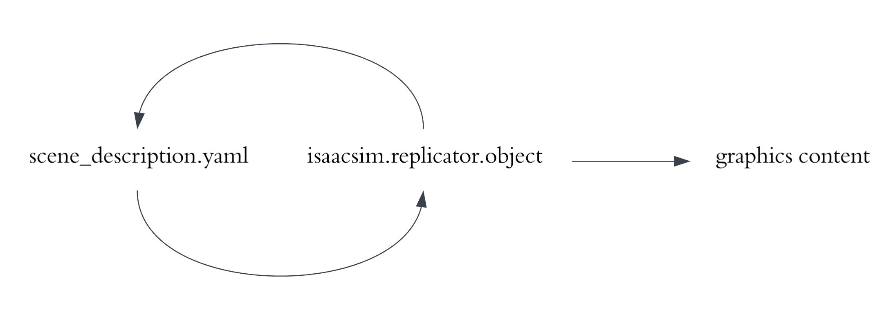
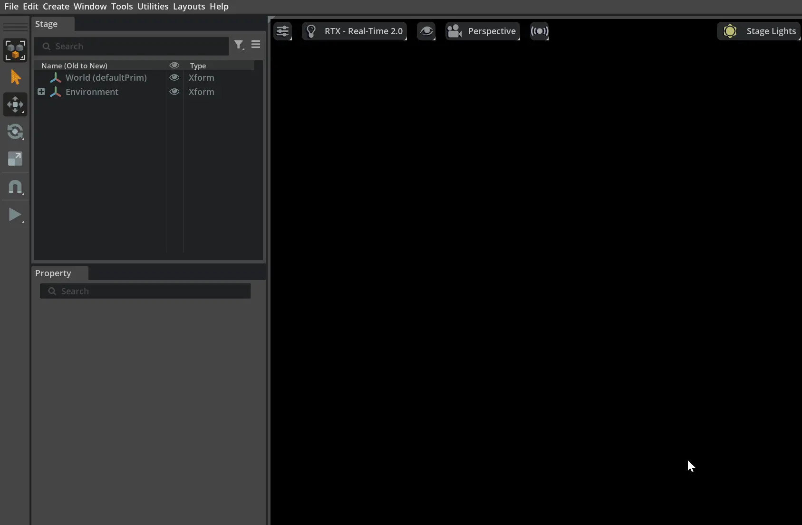
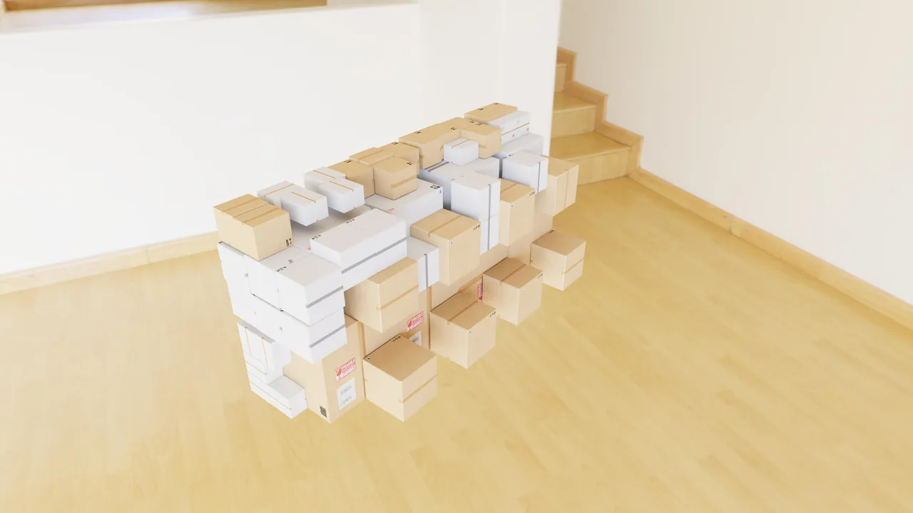
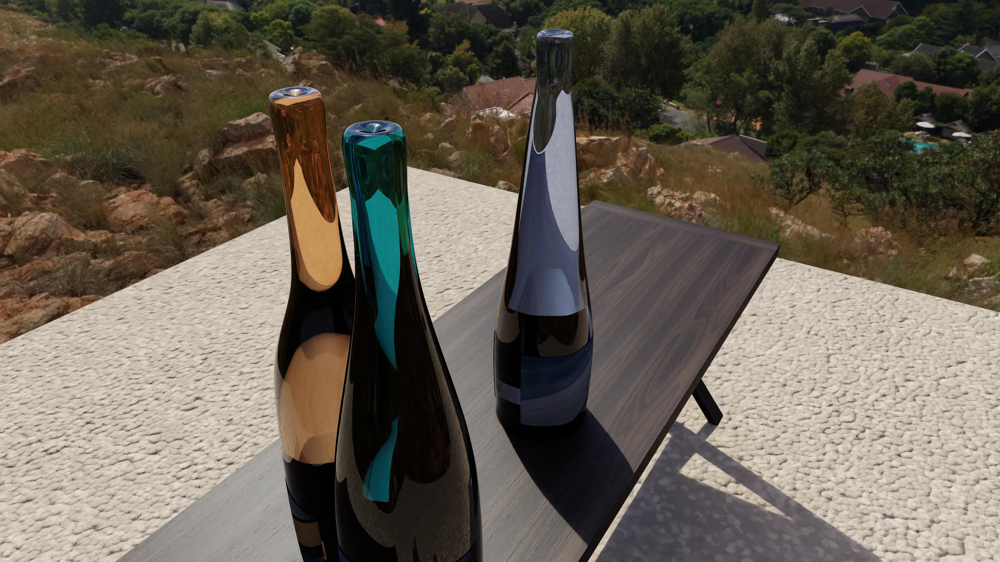
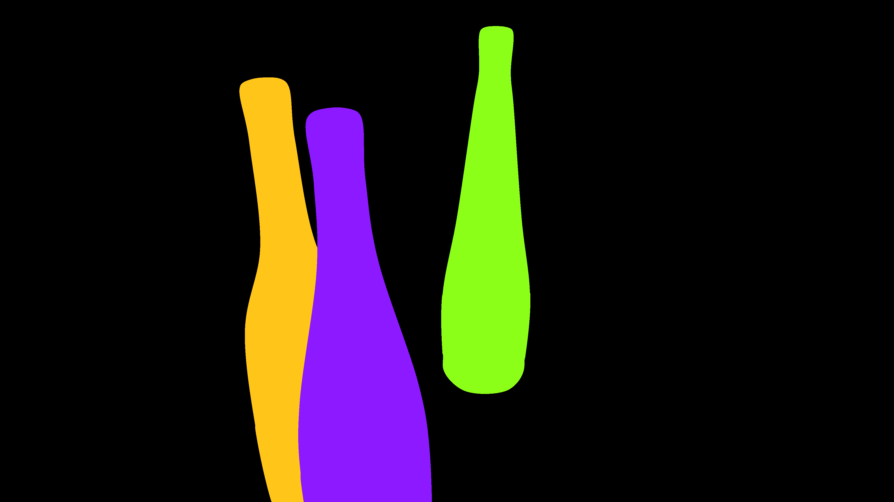
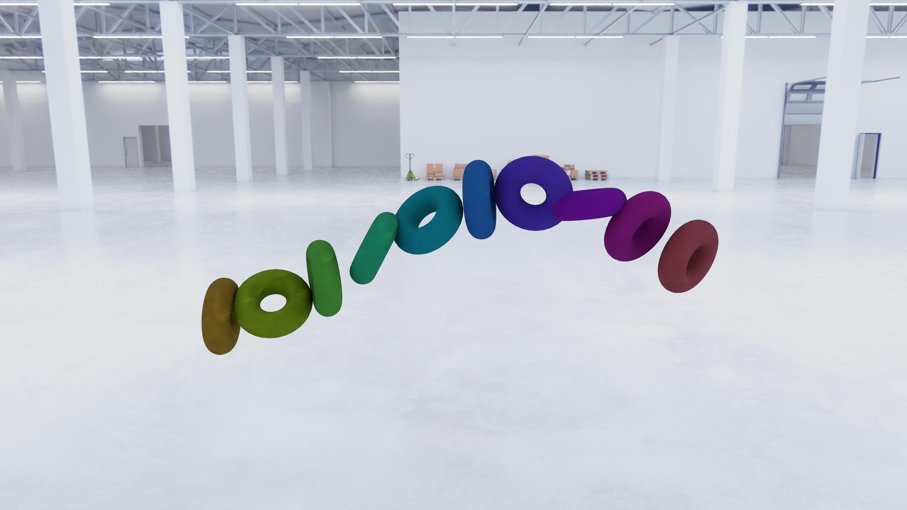
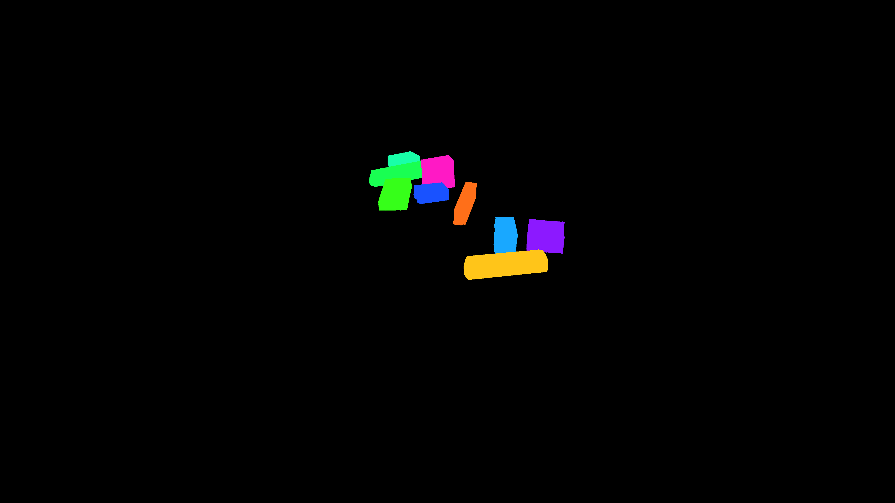

对象模拟与合成数据生成#
isaacsim.replicator.object (IRO) 是一款无需修改代码的工具，可为模型训练生成合成数据，适用于从零售目标检测到机器人技术的各类任务。该扩展程序可通过 UI 或 isaac-sim 容器运行。
它接收一个描述可变场景的 YAML 描述文件，或此类堆叠描述文件的层级结构作为输入，并输出一个描述文件以及包括 RGB、2D/3D 边界框和分割掩码在内的图形内容。

动机#
使用合成数据训练深度学习模型的需求日益增长，但用于生成合成数据的 3D 软件通常学习曲线陡峭，包括熟悉 UI 面板等阶段。IRO 旨在为您提供一种简便的方式来构建具有独特域随机化的场景。例如，该产品的典型用户是缺乏 Maya 和 3ds Max 等 3D 建模软件使用经验的数据科学家。
在域随机化场景中，数据科学家通常更关注控制场景随机化的规则以及这些随机化规则之间的关系，而非 3D 场景中的实际详细内容。IRO 提供了一套工具，利用宏来抽象、直观且紧凑地描述随机化的 3D 场景。
Chat IRO：IRO 的自然语言接口#
Chat IRO 是一款新扩展，允许您使用纯英语描述场景，并自动生成 IRO 描述文件（YAML）。它将配置应用到舞台，显示即时视口预览，可以运行模拟，并支持保存和加载 YAML 文件，从而实现快速、迭代的场景创作，无需手动编辑 YAML。
端到端流程#
端到端流程由使用 IRO 所需的各个主要步骤的分组组成。
获取图形资源
为了构建随机化场景，IRO 要求导入的 3D 模型采用 USD 格式。常见的 3D 格式（如 Wavefront OBJ）可以使用 asset converter 转换为 USD。
编写描述文件
描述文件的规范在本多页文档中进行了说明。建议您从 最佳实践 中的视频指南开始。
生成合成数据
请按照以下指南运行 IRO。
训练 CV 模型；部署与实际应用
在 TAO 6.0 中提供了一个示例笔记本，展示了如何使用 IRO 创建的合成图像训练目标检测模型的步骤。
从 UI 运行#
请按照 Omniverse Extension Manager 指南启用
isaacsim.replicator.object.core和isaacsim.replicator.object.ui扩展。如果扩展成功启用，Object SDG 面板将出现在右上角，并且 Tools > Action and Event Data Generation 中将包含 Object SDG 和 Distribution Visualizer 选项。
如果未出现，请禁用该扩展后再次启用。Object SDG 面板默认处于开启状态，您可以通过 Tools > Action and Event Data Generation > Object SDG 将其关闭或重新开启。

如上图所示，点击已打开的扩展面板右侧的文件夹图标或 Visual Studio Code 图标。扩展的根文件夹将会打开。
在
PATH_TO_CORE_EXTENSION/isaacsim/replicator/object/core/configs目录下有许多 YAML 格式的描述文件。 建议您从demo_kaleidoscope.yaml开始。对于 空白区域检测，请使用demo_empty_space.yaml并参考链接的目录页面。转到
global.yaml并将output_path更新为您可以存储仿真输出的任意本地文件夹。
注意
从 Simulate 按钮下方的下拉菜单中选择描述文件。加载扩展后，configs 文件夹中的所有 .yaml 文件的名称都将包含在此列表中。
描述文件中的占位符
某些示例描述文件包含占位符。这些路径需要替换为有效的路径。
例如：
在
global.yaml和minimum.yaml中，将PATH_TO_OUTPUT替换为有效路径。在
demo_bottle.yaml中，将PATH_TO_LABEL_IMAGES替换为包含 JPEG 图像的文件夹。要使
tutorial_harmonizer_permutate.yaml、demo_macro.yaml、tutorial_macro.yaml、tutorial_scene_graph.yaml和tutorial_scene_graph_randomized.yaml运行：在
global.yaml中，将PATH_TO_ORO替换为扩展根文件夹中data/oro_tutorial_models/oro.usd的绝对路径。
在
doc_observatory.yaml中：将
PATH_TO_OBSERVATORY_SCOPE替换为data/oro_tutorial_models/observatory_scope.usd的绝对路径将
PATH_TO_OBSERVATORY_BASE替换为data/oro_tutorial_models/observatory_base.usd的绝对路径将
PATH_TO_OBSERVATORY_SHAFT替换为data/oro_tutorial_models/observatory_shaft.usd的绝对路径。
要使
demo_bins_of_bins_rack_2_layers.yaml、demo_bins_of_bins_rack.yaml、demo_bins_of_bins.yaml、demo_table.yaml和demo_transform_operator.yaml正常工作：在
global.yaml中，将PATH_TO_BOXES替换为包含箱子（或其他 USD）USD 文件的文件夹。
demo_bin_pack.yaml不需要本地资源：它打包了从内容服务器流式传输的 SimReady 纸箱。

注意
装箱算法自下而上地放置箱子，因此每个箱子要么位于容器底部，要么由下方的箱子支撑；在装箱过程中未启用刚体物理。若要在此基础上实现完全物理化的沉降，请在描述文件中的箱子对象上设置 physics: rigidbody；这样做会导致箱子下落并重新排序，因此模拟后原始装箱布局将不会保留。
- 在
demo_shader_attributes.yaml中， 将
PATH_TO_USD替换为 USD 文件的路径。
- 在
在
demo_frustum.yaml中：将
PATH_TO_MAIN_OBJECTS替换为包含用作主要对象的 USD 文件的文件夹。将
PATH_TO_DISTRACTORS替换为包含用作干扰项的 USD 文件的文件夹。将
PATH_TO_BACKGROUND_IMAGES替换为包含用作背景图像的 JPEG 图像的文件夹。
如果显示不正确，您可以调整比例，因为不同的 USD 文件具有不同的大小。
从下拉框中选择
demo_kaleidoscope；Description File 文本框中将显示demo_kaleidoscope。您也可以使用完整的绝对路径PATH_TO_CORE_EXTENSION/isaacsim/replicator/object/core/configs/demo_kaleidoscope.yaml来加载描述文件。单击 Simulate 以启动仿真。进度条将显示仿真进度。
在上述及后续内容中，PATH_TO_CORE_EXTENSION 会有所不同，对于 Windows 上的 Isaac，它类似于 C:\isaacsim\extscache\isaacsim.replicator.object.core-0.x.y\isaacsim\replicator\object\core\configs\demo_kaleidoscope.yaml，而对于 Linux 上的 Isaac，它类似于 ~/isaacsim/extscache/isaacsim.replicator.object.core-0.x.y/isaacsim/replicator/object/core/configs/demo_kaleidoscope.yaml
有关如何使用该扩展的指南，请参见此处。
已知问题#
在 Object SDG 启动异步转换期间应用崩溃
在某些配置中，启动异步渲染（例如，在启用异步渲染的情况下单击 Simulate）可能会导致应用崩溃，原因是内部边界框缓冲区在完全初始化之前被读取。此问题已通过在使用前验证缓冲区计数来修复。典型用法不需要此修复，该修复计划在未来的版本中发布。
从 Docker 运行#
要安装 Isaac Sim Docker 容器，请访问 容器部署。
要运行 Isaac Sim Docker 容器：
docker run --gpus device=0 --entrypoint /bin/bash -v LOCAL_PATH:/tmp --network host -it ISAAC_SIM_DOCKER_CONTAINER_URL
相应地，将 global.yaml 更新为 output_path，使其成为 /tmp 下的任意文件夹。
例如，使用 demo_kaleidoscope 启动仿真：
bash isaac-sim.sh --no-window --enable isaacsim.replicator.object.core --allow-root --/log/file=/tmp/isaacsim.replicator.object.log --/log/level=warn --/windowless=True --/config/file=PATH_TO_CORE_EXTENSION/isaacsim/replicator/object/core/configs/demo_kaleidoscope.yaml
/tmp/isaacsim.replicator.object.log 包含执行期间以及扩展程序产生的消息。您可以通过在文件中筛选 METROPERF 来搜索来自扩展程序的消息。
注意
如果在 Docker 容器内首次运行时未生成任何内容，请再次运行。
嵌入式接口#
当无需将图形内容写入磁盘时，嵌入式接口是快速原型化描述文件的一种便捷方式。
要使用嵌入式接口，请选择一个描述文件，然后在 Object Detection SDG 面板中单击 Initialize Scene Randomization 按钮以加载描述文件。随机化符号将被创建并相应地连接。此后，每次单击 Randomize Scene 按钮都会对场景进行随机化。
注意
在单击 Initialize Scene Randomization 按钮之后、单击 Randomize Scene 按钮之前，视口显示为黑色属于正常现象。若要在该阶段查看感兴趣的内容，请按 “F” 键以聚焦于选定的 prim。

要预览物理效果，请单击左侧控件列中的三角形 Play 按钮。
预期输出#
仿真完成后，输出结果存储在 output_path 中。输出内容由输出开关设置决定。
例如，demo_bottle 的图像输出为：


而分割输出为：


2D 边界框为：
bottle_0 0 -1.0 0 1028 333 1362 2159 0 0 0 0 0 0 0
bottle_1 0 -1.0 0 1895 112 2277 1694 0 0 0 0 0 0 0
bottle_2 0 -1.0 0 1281 462 1854 2159 0 0 0 0 0 0 0
其中四个正数分别表示 x_min、x_max、y_min 和 y_max。数字 -1 本应表示遮挡率，但由于瓶子是透明的，因此此处为 -1。
另一个示例中，demo_kaleidoscope 的图像输出为：


而分割输出为：

概念#
Description File
描述文件是一个 YAML 文件，其中包含一个名为 isaacsim.replicator.object 的主键。
描述文件由键值对组成。每个键值对都是一个 Mutable、一个 Harmonizer 或一个 Setting。
描述文件按指定方式生成帧。每一帧都会随机化场景，捕获图形内容并输出到磁盘。Settings 描述场景的配置方式以及数据的输出方式。例如，您可以设置要输出的帧数、是否输出 2D 边界框，或设置物理模拟的重力和摩擦力。
描述文件使用称为 mutables 的对象来填充场景。
Mutables 会在每一帧进行随机化。有时您可能需要限制其随机化方式。例如，为了了解其他 mutables 的随机化情况并相应地进行随机化。为此，请定义 harmonizers。
Example Minimal Description File Definition
isaacsim.replicator.object:
version: 0.x.y
num_frames: 3
output_path: OUTPUT_PATH
screen_height: 1080
screen_width: 1920
seed: 0
Simulation Workflow
每次启动模拟时，开始时都会发生初始化阶段，并且每一帧都会发生逐帧模拟阶段。
在初始化阶段，描述文件由描述解析器解析。为每个需要解析以获取实际值的 mutable attribute 创建符号。这些符号在初始化后，当它们首次用于与 USD 场景交互时，以及在每次逐帧模拟中，都会解析为实际值。
每次解析符号时，也会递归解析其依赖符号。如果遇到未解析的 harmonized mutable attribute，解析器将进入 AWAITING_HARMONIZATION 状态，然后 harmonizers 执行 harmonize 操作（从 pitch attribute 收集信息并进行随机化），并将输出传播回 harmonized mutable attributes。在所有 harmonized mutable attributes 解析完成后，解析器将退出 AWAITING_HARMONIZATION 状态。
此后，解析得到的值用于更新 USD 场景。如果启用了重力，则解析物理模拟，使物体在重叠时相互分离或落到表面上（更多详细信息，请参阅 physics simulation explained）。并且捕获 graphics content。最终，记录并保存当前帧的场景状态，以便后续可以恢复或检查该状态。
更多详细信息请参阅 harmonization example。
Scene Restoration
为支持预训练模型的多采样：
在输出内容中，您可以使用从特定帧日志中保存的输出，生成与该帧生成时完全相同的 graphics content。或者您可以对其进行轻微修改，以生成不同的内容，同时保持其他所有内容不变。
主模拟工作流演练#
以下是如何运行主模拟工作流的演练。
第一步是设置描述文件。打开扩展管理器，搜索 isaacsim.replicator.object.core，然后单击 Open Extension Folder 按钮，如下图所示。
注意
如果 isaacsim.replicator.object.core 和/或 isaacsim.replicator.object.ui 未启用，请单击胶囊图标以启用它们。
在文件夹中，转到 PATH_TO_CORE_EXTENSION/isaacsim/replicator/object/core/configs。在 Windows 上，单击 Open Extension Folder 按钮后会自动打开该文件夹。在 Linux 上，它可能会通过 URL file://EXTENSION_PATH 打开浏览器，在这种情况下，请使用命令行或 xdg-open 导航到 EXTENSION_PATH。
编辑 global.yaml 文件。将 OUTPUT_PATH 设置为您希望存储输出的文件夹。此外，将 PATH_TO_BOXES 更新为包含盒子 USD 文件的文件夹。
从下拉框中选择 demo_table，然后单击 Simulate 按钮。模拟将运行，输出将存储在由 OUTPUT_PATH 指定的文件夹中。

编写描述文件#
若要编写一个描述文件以生成包含桌子且随机物体掉落在其上的场景：
假设我们拥有以下资产：
用于穹顶灯光的 HDRI 纹理，位于
PATH_TO_HDRI作为桌子的 USD 模型，位于
PATH_TO_TABLE包含待散布到桌子上的物体 USD 模型的文件夹，位于
PATH_TO_OBJECTS
在编写描述文件之前，规划图形资产的分布。将资产拖入视口以了解其大致情况，请参考图片。此处创建了一个穹顶灯，并将其纹理设置为 PATH_TO_HDRI；然后添加 PATH_TO_TABLE 中的桌子；接着添加 PATH_TO_OBJECTS 中的一个物体。

调整即将散布到桌子上的物体的位置，使其处于合理的位置范围内。

通过观察，从 (-13, 100, -70) 到 (13, 100, 70) 是盒子位置的合理范围。按如下方式编写描述文件：
isaacsim.replicator.object:
# the minimum
version: 0.x.y
num_frames: 3
seed: 0
output_path: PATH_TO_OUTPUT
screen_height: 2160
screen_width: 3840
# physics parameters
gravity: 10000
friction: 0.3
simulation_time: 10
linear_damping: 4
# light
bright_light:
type: light
subtype: dome
intensity: 1000
transform_operators:
- rotateX: 270
texture_path: PATH_TO_HDRI
# camera; transforms page has more details on how to construct a list of transform operators
focal_length: 14.228393962367306
horizontal_aperture: 20.955
camera_parameters:
screen_width: $[/screen_width]
screen_height: $[/screen_height]
focal_length: $[/focal_length]
horizontal_aperture: $[/horizontal_aperture]
near_clip: 0.001
far_clip: 100000
default_camera:
type: camera
camera_parameters: $[/camera_parameters]
transform_operators:
- translate:
- 0
- 50
- 0
- rotateY:
distribution_type: range
start: -180
end: 180
- rotateX: -30
- translate_local:
- 0
- 0
- 400
# boxes
box:
count: 10
type: geometry
subtype: mesh
physics: rigidbody # reacts to gravity, collisions, etc.
tracked: true # if true, the bounding boxes, segmentation, etc. will be recorded in the output
usd_path:
distribution_type: folder
value: PATH_TO_OBJECTS
suffix: usd
transform_operators:
- translate: # as planned
distribution_type: range
start:
- -13
- 100
- -70
end:
- 13
- 100
- 70
- rotateXYZ:
distribution_type: range
start:
- -180
- -180
- -180
end:
- 180
- 180
- 180
- scale:
- 0.2
- 0.2
- 0.2
table:
type: geometry
subtype: mesh
physics: collision # rigidbodies will collide with it, but it doesn't move
usd_path: PATH_TO_TABLE
transform_operators:
- rotateX: -90
点击 Simulate 按钮运行模拟，生成如下所示的 RGB 图像：

以及如下所示的分割掩码：


注意
检查描述中的 YAML 文本格式是否正确（例如缩进）。如果遇到错误 mapping values are not allowed here，可能是由于格式问题导致的。
场景编辑#
为了方便场景规划，提供了一个基本的场景编辑小部件，用于切换 prim 的可见性。
在使用此描述文件通过嵌入式界面创建的场景中，你可以创建一个立方体，更改其平移和大小（但不能更改旋转），并移动它来切换那些位置包含在立方体空间范围内的 prim 的可见性，如下所示：

注意
在点击 Toggle Visibility of selected region 按钮之前，请确保已选中立方体。
目录#
链接目录文件中的约定：
表格中的 Type 表示预期的数据类型。当预期某种类型时，可以使用宏字符串以便后续对该特定类型进行求值。例如，如果预期值为 int，则可以直接提供 int，也可以提供类似 $[index] 的内容。有关详细信息，请参阅 Macro。
在 mutable 中，除了这些选项外，还可以指定一个 Mutable Attribute 以计算为该类型。
numeric 表示字面量或计算后的 float 或 int。
使用的第三方库#
py3dbp（已修改），MIT 许可证 PyYaml，MIT 许可证 trimesh，MIT 许可证 regex，Apache 许可证